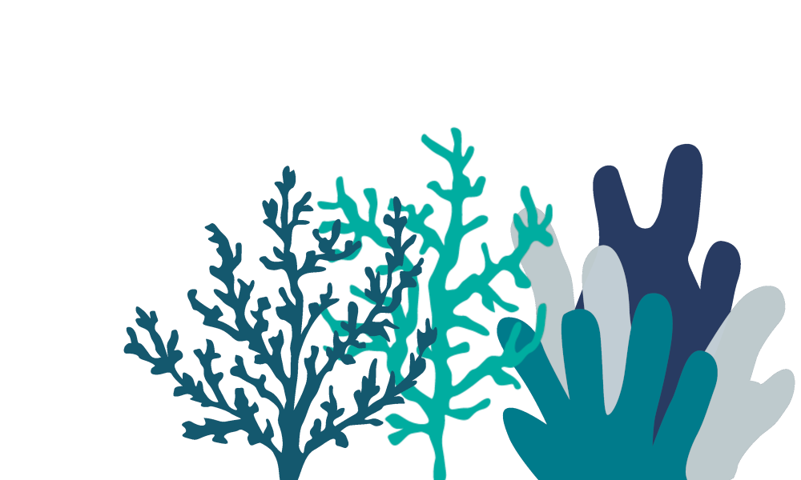
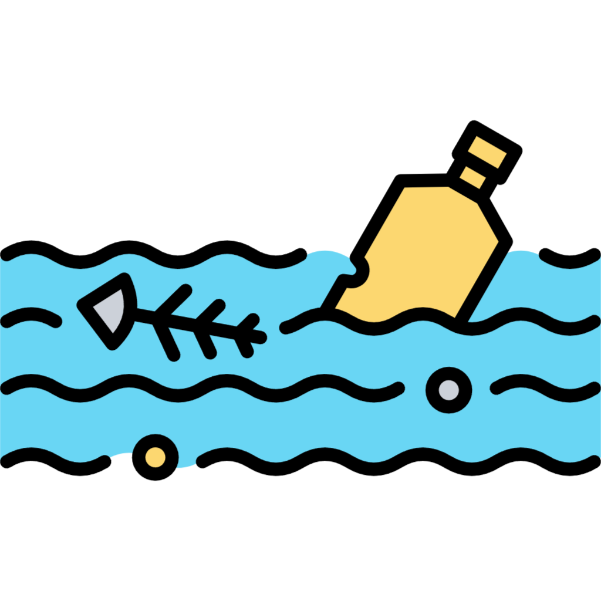
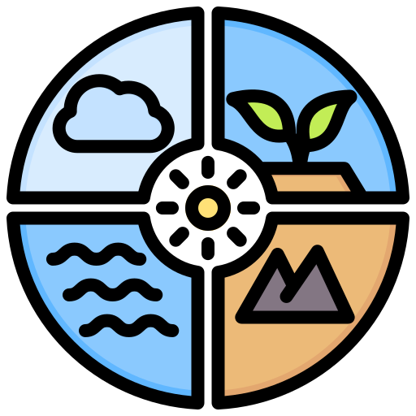
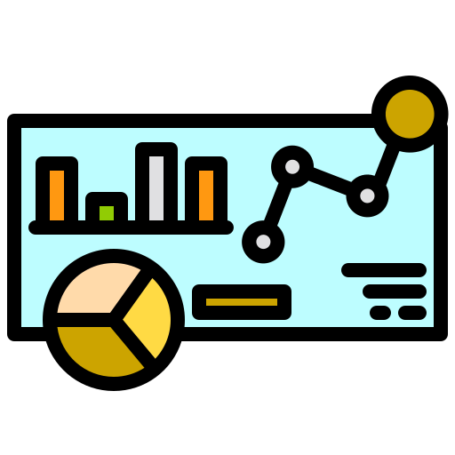

Poluição dos Oceanos
O aumento de resíduos sólidos mal gerenciados ameaça a biodiversidade marinha e ecossistemas costeiros.

Conscientização e Incentivo
Falta de conscientização e incentivos claros desencorajam práticas sustentáveis na produção e reciclagem empresarial.

Desperdício de Recursos Naturais
Produção excessiva e descarte inadequado esgotam recursos preciosos e intensificam a degradação ambiental global.

Inovação e Renovação
Transformando a sustentabilidade empresarial e a responsabilidade ambiental em toda a cadeia de suprimentos.
Promove práticas ambientais responsáveis, fortalecendo a reputação das empresas.
Minimiza a poluição e o desperdício, preservando os recursos naturais e o meio ambiente.
Rastreabilidade via Blockchain aumenta a transparência e a confiança na cadeia produtiva.

Blockchain
Rastreia e registra de forma segura o ciclo de vida dos produtos, garantindo transparência e confiabilidade
Internet das coisas
Permite o monitoramento dos produtos ao longo de sua jornada, desde a produção até a reciclagem, otimizando processos e reduzindo desperdícios

Dashboards
Dados são apresentados de forma clara e acessível, proporcionando insights valiosos sobre a produção e reciclagem.
Promover Sustentabilidade Empresarial
Capacitar empresas a adotarem práticas sustentáveis de produção e reciclagem.
Reduzir Impacto Ambiental
Minimizar poluição e desperdício, preservando recursos naturais e os oceanos.
Aumentar Consciência Ambiental
Educar sobre importância da reciclagem e responsabilidade na gestão de resíduos.
Fomentar Transparência e Responsabilidade
Rastrear produtos, garantindo transparência e incentivo à responsabilidade corporativa.

Informa as pessoas sobre a importância da reciclagem e práticas sustentáveis, incentivando a mudança de comportamento.
Promove a oferta de produtos fabricados por empresas comprometidas com a sustentabilidade, permitindo aos consumidores fazerem escolhas mais conscientes.
Cria oportunidades de emprego em centros de reciclagem locais, contribuindo para o desenvolvimento econômico das comunidades.